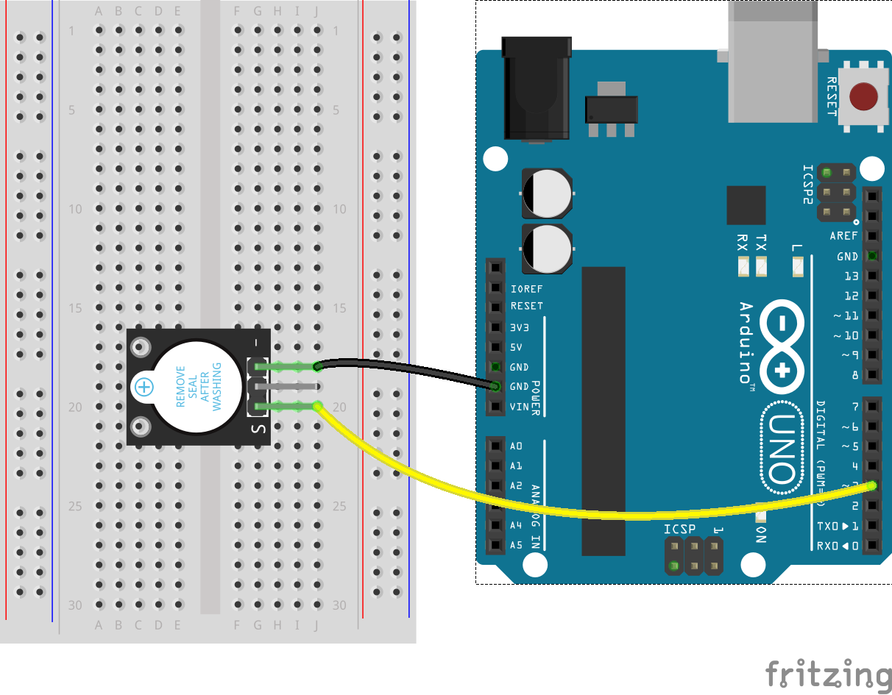
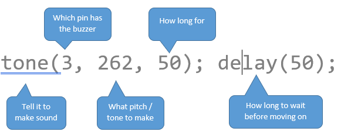

While the Arduino isn’t powerful enough to play an MP3 file, it can still make sounds. Not only can it make sound, it is able to make a complete range of sounds and even comes with a helper function to make it work better. Sound works on the same idea as fading a light in and out, and uses a PWM pin to be able to output various frequencies to turn into various pitches of sound.
We’ll start simple, making a couple of different noises and Morse code, but eventually working up to tones, chimes and even songs.
Wiring a buzzer to make noise is really easy. We need to supply a signal to the S pin from one of our PWM pins so today we’ll use pin 3, and we need to connect the - pin to ground, or GND. That’s it!

Getting started with this is really easy. Start a new project, and write the following code:
1
2
3
4
void setup() {
tone(3, 262, 50); delay(50);
}
void loop() {};
We’re putting the code into setup and not loop so that we only play the sound once. If we want to hear it again, we just need to hit the reset button. Upload it and try it out. You should hear a little “Buzz”
Try making your code look like this instead. Keep the loop at the bottom, we’re not using it anymore but the Arduino needs it to be there, even if it’s empty.
1
2
3
4
5
void setup() {
tone(3, 262, 50); delay(50);
tone(3, 262, 50); delay(50);
tone(3, 262, 50); delay(50);
}
What’s the difference? You might not even be able to tell.
To make the tone code work properly we have to do five things:

We need the extra delay(50); on the end because of how slow the Arduino is. It needs a break between tones and other jobs. It’s also easy to keep track of if we put it all on one line like this. A delay of 50 is very short. Try changing both 50s so they’re 500s
Try and make the buzzer say “SOS” in morse code. You’ll need to adjust the delay(##) numbers so that they leave a small gap after the tone. “SOS” is short-short-short … long-long-long … short-short-short. Make each short buzz
150and each long buzz500. The delay after each one should be 100 bigger (250and600)
Aside from length of sound, we can adjust the tone itself. The 262 above is “Middle C” or just a normal musical note. We can adjust this up and down to make the sound higher or lower.
Try this code instead:
1
2
3
4
5
void setup() {
tone(3, 262, 150); delay(150);
tone(3, 294, 150); delay(150);
tone(3, 330, 150); delay(150);
}
Notice we changed the second number in tone. This changes the pitch.
Continue this code using the numbers
262, 294, 330, 349, 392, 440, 494, 554.
Try making it play the tones175, 175, 175, 147with durations of300, 300, 300, 900and delays of400, 400, 400, 1000. What song is it?
Have a play with the tones, durations and delays. See if you can work out how to make a door bell, or a police siren, or other simple tunes of a few notes.
See if you can sync up an LED to the tones. You might have to put the digitalWrite code BETWEEN the tone and delay codes.
This text hasn't been updated yet. Be nice!
This is my new site
This is the stuff I need to adjust later